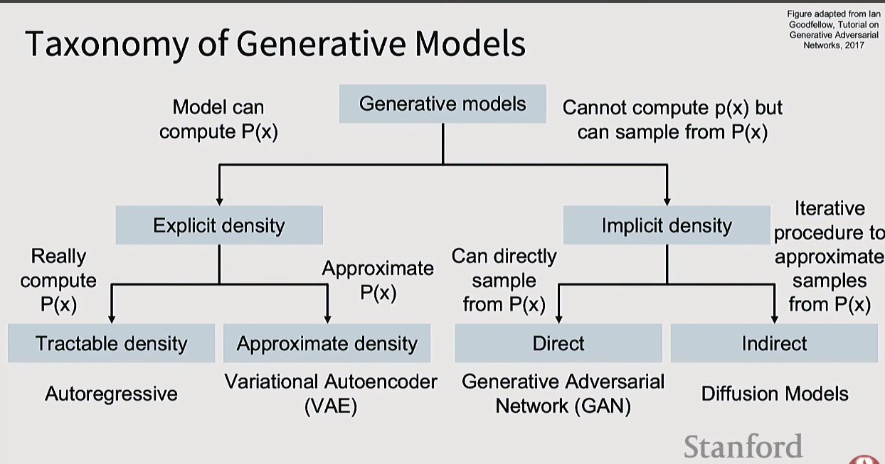

Generative models learn the probability distribution of data, enabling them to synthesize new samples. Unlike discriminative models (which learn P(y|x)), generative models learn P(x) or P(x|y). This topic covers the full taxonomy: autoencoders, VAEs, GANs, and diffusion models.
| Model type | Learns | Question |
|---|---|---|
| Discriminative | P(y|x) | "Given this image, what's the probability it's a cat?" |
| Generative | P(x) | "What kinds of images exist, and how likely are they?" |
| Conditional generative | P(x|y) | "Generate an image, given that the label is cat." |
When to use generative models: whenever there is ambiguity in the output. Asking for "a dog wearing a hot-dog hat" has many valid answers — generative models capture this distribution.
All generative models optimize maximum likelihood:
W* = argmax_W Σᵢ log p(x⁽ⁱ⁾; W)
Equivalent to minimizing Negative Log Likelihood (NLL).
Generative Models
├── Can compute P(x) directly (Explicit Density)
│ ├── Tractable density → Autoregressive models (PixelCNN, GPT)
│ └── Approximate density → VAE — optimize ELBO
└── Cannot compute P(x), but can sample from P(x) (Implicit Density)
├── Direct sampling → GAN
└── Indirect (iterative) → Diffusion Models
The key split: explicit models reason about probabilities directly; implicit models just generate samples without assigning likelihoods.
Probabilistic encoder-decoder. Learns a structured latent space where you can sample and interpolate.
Generator vs Discriminator minimax game. Dominated image synthesis 2016–2021.
Iterative denoising from noise. Current state of the art for image and video generation.

VAEs extend autoencoders to be probabilistic generative models. Instead of encoding x to a fixed z, the encoder outputs a distribution q(z|x) (mean and variance).
p(z) (e.g., Gaussian)p_θ(x | z) using the decoderAfter training, generate new data: sample z from p(z) → feed to decoder → get new x.
Computing the true posterior P(z|x) is intractable. Solution: lower-bound the log-likelihood:
ELBO = E[log P(x|z)] - KL(q(z|x) || p(z))
Two networks compete in a minimax game:
Goal: the generator learns to fool the discriminator until D can no longer distinguish fake from real. At equilibrium: p_G = p_data.
Analogy: forger (G) vs. detective (D). Forger improves to create more convincing fakes; detective improves to catch them.
Diffusion models generate images by iteratively denoising random noise:
Denoising Diffusion Probabilistic Models (DDPM)
Trains the model to move along straight paths from noise to data (vs. curved DDPM paths). Faster inference (1–4 steps vs. dozens). Used in Stable Diffusion 3, FLUX.
Flow Straight and Fast: Learning to Generate and Transfer Data with Rectified Flow
Trains one model for both conditional and unconditional generation. At inference:
score = score_unconditional + w × (score_conditional - score_unconditional)
Higher guidance weight w → samples more strongly matching the condition.
Classifier-Free Diffusion Guidance
Replace the U-Net backbone inside diffusion models with a Transformer. Scales better with compute. Used in Stable Diffusion 3, FLUX, Sora.
Scalable Diffusion Models with Transformers
Compress many denoising steps to fewer via distillation:
Running diffusion in pixel space is expensive. LDMs compress images into a lower-dimensional latent space first:
Modern LDM pipelines use VAE + GAN + Diffusion — each component handles what it's best at:
High-Resolution Image Synthesis with Latent Diffusion Models
| Family | Status |
|---|---|
| GANs | Historically important, mostly replaced |
| Diffusion models | Dominant for image and video generation |
| Autoregressive models | Dominant for language; increasingly used for images |
| VAEs | Essential component in LDM encoder/decoder |